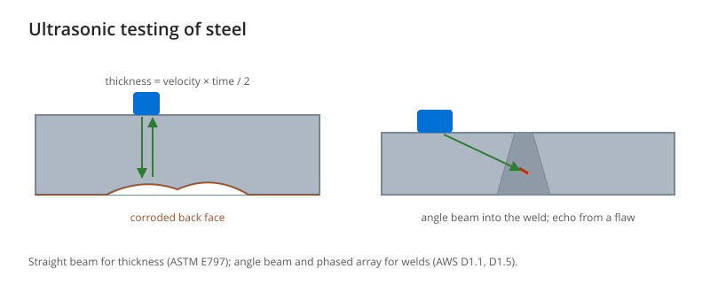

Ultrasonic testing of steel and welds
In one sentence: ultrasonic testing (UT) sends high-frequency sound into steel and reads the echoes, to measure how thick the steel still is or to find flaws inside welds and plates.

Thickness gauging
A straight-beam probe on the surface times the echo from the back wall. Thickness = velocity × time ÷ 2. Used to measure remaining section where corrosion has thinned a flange, web or plate. ASTM E797 covers the method. Multiple-echo gauges can read through paint.
Tips:
- Calibrate on a block of known thickness of similar steel.
- Grind away loose rust and scale, and use couplant.
- Take a grid of readings in corroded areas, not one spot.
Flaw detection (pulse-echo)
Angle-beam probes send sound into the weld at an angle. An echo from inside the weld, at a position the geometry says shouldn't reflect, indicates a flaw: a crack, lack of fusion, slag or porosity. The inspector sizes it by the echo and compares with the acceptance criteria of the governing code, such as AWS D1.1 for structural steel or AWS D1.5 for bridges.
Phased array (PAUT) and TOFD
- Phased array uses many small elements fired in sequence to sweep the beam and produce images of the weld cross-section. Faster coverage and a permanent record.
- Time-of-flight diffraction (TOFD) uses diffracted signals from crack tips to size cracks in height accurately.
Limits
- Needs a trained, certified operator. See Who may inspect and test: qualifications.
- Rough surfaces, thin sections and complex geometry make it harder.
- Doesn't find surface-breaking cracks as easily as Magnetic particle and dye penetrant testing; the methods complement each other.
Common mistakes
- Thickness readings without calibrating on similar steel.
- Reading one point in a corroded area and calling it the remaining section.
- Applying the wrong code's acceptance criteria.